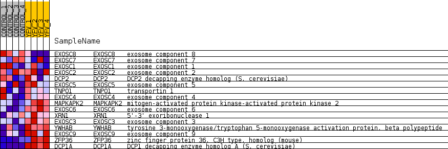
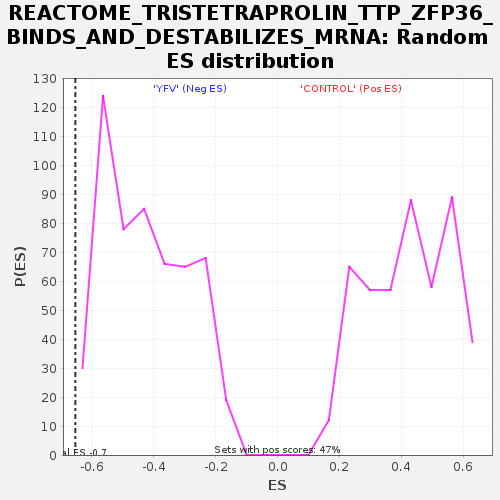

Profile of the Running ES Score & Positions of GeneSet Members on the Rank Ordered List
| Dataset | MATRIZ_GSE99081_collapsed_to_symbols.gsea_CLASE_99081.cls#CONTROL_versus_YFV |
| Phenotype | gsea_CLASE_99081.cls#CONTROL_versus_YFV |
| Upregulated in class | YFV |
| GeneSet | REACTOME_TRISTETRAPROLIN_TTP_ZFP36_BINDS_AND_DESTABILIZES_MRNA |
| Enrichment Score (ES) | -0.652191 |
| Normalized Enrichment Score (NES) | -1.5349873 |
| Nominal p-value | 0.03364486 |
| FDR q-value | 0.115994774 |
| FWER p-Value | 1.0 |
| SYMBOL | TITLE | RANK IN GENE LIST | RANK METRIC SCORE | RUNNING ES | CORE ENRICHMENT | |
|---|---|---|---|---|---|---|
| 1 | EXOSC8 | exosome component 8 | 1336 | 0.565 | -0.0133 | No |
| 2 | EXOSC7 | exosome component 7 | 5022 | 0.157 | -0.2213 | No |
| 3 | EXOSC1 | exosome component 1 | 5080 | 0.151 | -0.2063 | No |
| 4 | EXOSC2 | exosome component 2 | 6756 | 0.023 | -0.3067 | No |
| 5 | DCP2 | DCP2 decapping enzyme homolog (S. cerevisiae) | 10098 | -0.030 | -0.5090 | No |
| 6 | EXOSC5 | exosome component 5 | 11211 | -0.121 | -0.5627 | No |
| 7 | TNPO1 | transportin 1 | 11299 | -0.129 | -0.5523 | No |
| 8 | EXOSC4 | exosome component 4 | 11388 | -0.137 | -0.5409 | No |
| 9 | MAPKAPK2 | mitogen-activated protein kinase-activated protein kinase 2 | 13186 | -0.326 | -0.6118 | Yes |
| 10 | EXOSC6 | exosome component 6 | 13717 | -0.396 | -0.5960 | Yes |
| 11 | XRN1 | 5'-3' exoribonuclease 1 | 14629 | -0.524 | -0.5881 | Yes |
| 12 | EXOSC3 | exosome component 3 | 15113 | -0.658 | -0.5374 | Yes |
| 13 | YWHAB | tyrosine 3-monooxygenase/tryptophan 5-monooxygenase activation protein, beta polypeptide | 15679 | -0.948 | -0.4563 | Yes |
| 14 | EXOSC9 | exosome component 9 | 15703 | -0.988 | -0.3369 | Yes |
| 15 | ZFP36 | zinc finger protein 36, C3H type, homolog (mouse) | 15835 | -1.191 | -0.1993 | Yes |
| 16 | DCP1A | DCP1 decapping enzyme homolog A (S. cerevisiae) | 16050 | -1.833 | 0.0116 | Yes |

